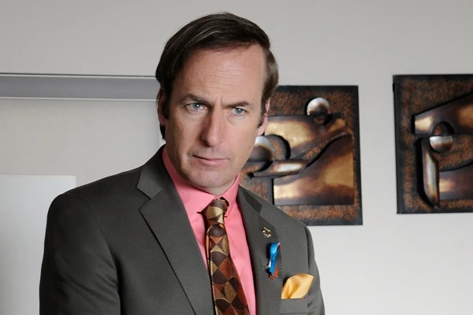
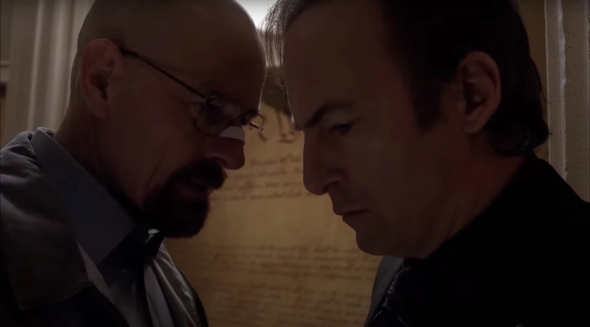
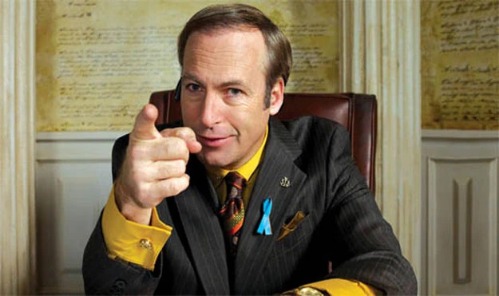

Saul Goodman

Saul Goodman, interpretado por Bob Odenkirk, es uno de los personajes más carismáticos y memorables de *Breaking Bad*, tanto que su popularidad lo llevó a tener su propia serie derivada, *Better Call Saul*, que explora su vida antes de convertirse en el “abogado de los criminales” en Albuquerque. Saul es el nombre que elige el abogado Jimmy McGill para operar en el submundo del crimen. Con su lema "Better Call Saul" y su habilidad para encontrar lagunas legales, Saul representa la corrupción del sistema judicial y los dilemas morales de un hombre que elige la ilegalidad en busca de éxito.
Inicios: De Jimmy McGill a Saul GoodmanAntes de convertirse en Saul Goodman, Jimmy McGill era un hombre con una vida difícil y complicada. Nació en una familia modesta y pasó gran parte de su juventud cometiendo delitos menores, lo que le valió el apodo de “Slippin’ Jimmy” por su habilidad para salir ileso de problemas legales y engañar a los demás. Jimmy siempre buscó el reconocimiento y el éxito, y finalmente decidió estudiar derecho como una manera de limpiar su nombre y hacer algo positivo con su vida. A pesar de sus intenciones de reformarse, Jimmy siempre fue un hombre que buscaba atajos y que tenía un ingenio notable para manipular a las personas y las situaciones a su favor. Su hermano Chuck, un prestigioso abogado, lo ve con desprecio y duda de sus habilidades y ética profesional. A medida que Jimmy se enfrenta a la hostilidad de su hermano y a las dificultades de establecer una carrera respetable en el ámbito legal, se da cuenta de que su pasado y sus métodos poco ortodoxos son herramientas efectivas para alcanzar el éxito, incluso si significan apartarse de la moralidad convencional.
 Saul Goodman: El Abogado de los CriminalesAdoptando el seudónimo de "Saul Goodman" (una frase derivada de "It's all good, man"), Jimmy empieza a construir una reputación en el submundo criminal como el abogado al que todos pueden acudir en situaciones desesperadas. Con su publicidad llamativa, comerciales de televisión, y una oficina llena de ostentación kitsch, Saul se convierte en un personaje enigmático y extravagante. Se especializa en defender a clientes de dudosa reputación y encuentra oportunidades legales para sacarlos de problemas, sin cuestionarse la moralidad de sus actos. Saul es experto en eludir las leyes y en encontrar lagunas legales para proteger a sus clientes. A diferencia de otros abogados, no le importa la ética ni las consecuencias, sino únicamente el dinero y la notoriedad. Su habilidad para mentir y manipular lo convierte en un recurso invaluable para los criminales de Albuquerque, y eventualmente capta la atención de Walter White y Jesse Pinkman.
 Asociación con Walter White y Jesse Pinkman
Asociación con Walter White y Jesse Pinkman
Saul Goodman juega un papel fundamental en la historia de *Breaking Bad* al convertirse en el abogado de confianza de Walter White y Jesse Pinkman. Cuando Walter y Jesse necesitan ayuda legal para expandir su negocio de metanfetaminas, Saul se convierte en una pieza clave en sus operaciones. Con su conocimiento del mundo criminal y su red de contactos, Saul los ayuda a encontrar soluciones para problemas complejos, desde el lavado de dinero hasta la fabricación de coartadas y la evasión de la DEA. Aunque al principio Saul ve a Walter y Jesse como simples clientes, pronto se da cuenta del peligro y la ambición de Walter. A medida que Heisenberg se convierte en una figura cada vez más temida en el mundo criminal, Saul se encuentra atrapado en una relación de negocios con uno de los criminales más impredecibles y peligrosos. Sin embargo, su deseo de obtener grandes sumas de dinero lo lleva a aceptar los riesgos y a ayudar a Walter en actividades cada vez más ilegales y peligrosas.
 Saul como Intermediario y el Mundo de las ConexionesSaul Goodman no solo actúa como abogado, sino también como intermediario en el submundo criminal de Albuquerque. A través de sus conexiones, introduce a Walter y Jesse a personajes clave, como Mike Ehrmantraut, el solucionador de problemas de Gus Fring, y a Gustavo “Gus” Fring mismo, el narcotraficante dueño de Los Pollos Hermanos. Gracias a Saul, Walter obtiene los contactos necesarios para hacer crecer su imperio de drogas, aunque esta expansión también conlleva mayores peligros. Saul se especializa en mantener su negocio al margen de la ley y en ofrecer servicios completos a sus clientes: protección, evasión de la justicia, lavado de dinero y hasta desaparición en caso de que las cosas se pongan demasiado peligrosas. Aunque Saul es consciente de los riesgos, su astucia y su habilidad para encontrar soluciones lo mantienen en el negocio.
 Saul Goodman: Un Personaje Cautivador y Trágico
Saul Goodman: Un Personaje Cautivador y Trágico
A lo largo de la serie, Saul Goodman muestra un enfoque pragmático y cínico hacia la ley. Para él, el sistema de justicia es solo una herramienta que puede ser manipulada en beneficio de quienes tienen los medios para hacerlo. Sin embargo, en *Better Call Saul*, vemos que detrás de la fachada de Saul Goodman hay un hombre llamado Jimmy McGill, que alguna vez tuvo buenas intenciones pero que fue corrompido por la avaricia, las circunstancias y la falta de apoyo familiar. Saul se convierte en un personaje cautivador por su personalidad divertida, astuta y, a menudo, inmoral. Es un hombre atrapado en una espiral de mentiras y engaños, y aunque rara vez muestra arrepentimiento, su historia en *Better Call Saul* revela que sus decisiones están motivadas por una mezcla de dolor, rechazo y el deseo de ser aceptado y valorado.
 Consecuencias y Final de Saul en Breaking Bad
Consecuencias y Final de Saul en Breaking Bad
En los últimos episodios de *Breaking Bad*, Saul se da cuenta de que su asociación con Walter White ha llegado a un punto de no retorno. El imperio de Walter se derrumba y su propio negocio queda expuesto. Temiendo por su vida, Saul usa sus contactos para desaparecer y adopta una nueva identidad, como gestor de una tienda de Cinnabon en Omaha, Nebraska. Este final es agridulce: Saul, que siempre logró eludir las consecuencias de sus actos, finalmente se ve obligado a huir y a dejar atrás la vida que construyó.
 El Legado de Saul GoodmanSaul Goodman es uno de los personajes más complejos y multifacéticos de *Breaking Bad*. Con su habilidad para navegar en el submundo criminal y su pragmatismo moral, se convierte en un recurso invaluable para los protagonistas, pero también en un símbolo de la corrupción y los dilemas éticos del sistema judicial. Su historia en *Better Call Saul* revela que, aunque comenzó con buenas intenciones, Jimmy McGill sucumbió al poder y al dinero, perdiéndose en la personalidad de Saul Goodman. El legado de Saul es el de un personaje que representa los grises morales de la vida: alguien dispuesto a hacer lo que sea necesario para sobrevivir y prosperar, aunque sea a costa de sus principios. Su historia es un recordatorio de cómo las circunstancias y la ambición pueden transformar a una persona, llevándola de ser un hombre con sueños y valores a convertirse en el abogado de los criminales más peligrosos.